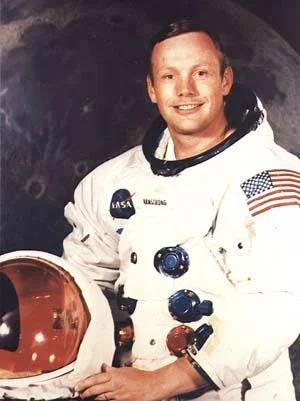

Neil Armstrong
Neil Armstrong (1930–2012) est un astronaute américain, célèbre pour avoir été le premier humain à poser le pied sur la Lune le 20 juillet 1969.
Ingénieur aéronautique et pilote d’essai, il participe aux programmes Gemini 8 et Apollo 11.
« C’est un petit pas pour l’homme, un bond de géant pour l’humanité. »
- Nationalité : Américaine
- Missions : Gemini 8, Apollo 11
- Fait marquant : Premier homme sur la Lune.